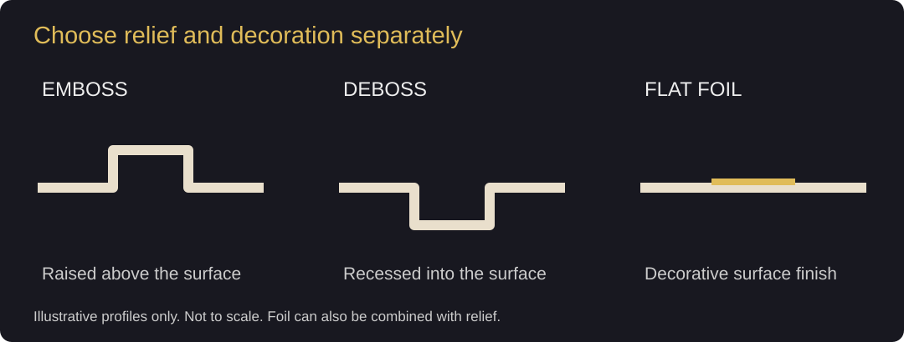
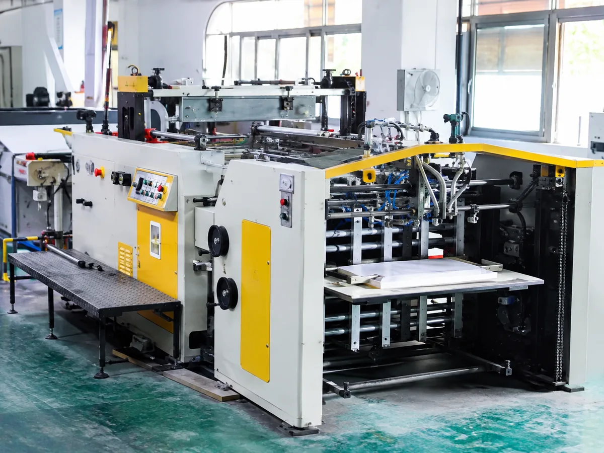

Quick answer: Embossing raises a design above the surrounding surface; debossing presses it below the surface. Foil stamping adds a transferred decorative finish and can be combined with relief. For a custom gift box, choose the effect around the logo, paper and viewing conditions, then approve it on a sample that represents the intended construction.
In this guide
- What is the difference between embossing, debossing and foil stamping?
- Which logo finish should you choose for a gift box?
- What do real packaging buyers ask before ordering?
- How should you prepare logo artwork for embossing or debossing?
- Why do paper and surface treatment change the result?
- What should you check on the finished sample?
- What affects the cost of a finished gift-box logo?
- What should you send for a custom gift-box quote?
- Frequently asked questions
What is the difference between embossing, debossing and foil stamping?
The simplest distinction is direction versus decoration. An embossed logo stands up; a debossed logo sits down. A blind finish uses relief without an added printed or foil image in that area. Foil is a separate visual choice: a metallic-looking logo is not necessarily raised, and a raised logo is not necessarily metallic.
Holmen’s paperboard guide describes the raised and indented effects and explains that material construction affects the relief a board can support. KURZ’s tooling overview distinguishes flat stamping from relief options. These process references help define the terms; they do not approve a particular gift-box specification.
For a wrapped rigid box, ask which layer will carry the effect and when it will be applied. The wrap paper, surface treatment and supporting construction need to be considered together. Do not assume that a result seen on an invitation, leather cover or folding carton will transfer unchanged to your box.

Which logo finish should you choose for a gift box?
Start with the job the logo needs to do. If the brief calls for a tactile mark with little added color, compare blind embossing and blind debossing on the chosen paper. If the mark must catch light or contrast with the background, request a foil sample. If both shine and relief matter, discuss a combined effect and its tooling with the supplier.
A pale skincare box with a restrained wordmark is a useful blind-finish concept to prototype. A dark fragrance box with a small metallic emblem is a useful foil concept. A raised metallic crest is a third option, but its alignment and fine detail need their own review. These are proposed applications, not measured customer cases or evidence that a finish increases sales.
Keep one feature as the main emphasis. If you cannot explain what a second finish adds to the logo, compare a simpler version before paying for extra development. Explore our packaging materials and finishing options, or compare magnetic gift boxes with lid-and-base rigid boxes before fixing the decoration.
What do real packaging buyers ask before ordering?
In a Reddit packaging-identification discussion, the question centered on describing a soft-feel box and its logo treatment. In a separate sourcing discussion, a buyer wanted magnetic boxes in two sizes and considered a gold-foil logo. The useful lesson is practical: a photograph of the desired look should be accompanied by dimensions, quantities and a description of the finish.
These conversations are individual experiences, not a market survey or verified supplier advice. They help identify what a useful brief must clarify. Write ‘recessed logo with a metallic gold finish’ if that is the intention, rather than relying on ‘gold embossing’ to communicate both depth and color. Ask the supplier to restate the proposed process before quoting.
How should you prepare logo artwork for embossing or debossing?
Send editable vector artwork with the intended logo size and position. Identify which elements are printed, foiled, embossed or debossed in separate, clearly named layers or files using the supplier’s artwork instructions. Supply a composite preview as a visual reference, while keeping the production elements unambiguous.
Ask the supplier to review the thinnest strokes, small gaps, reversed lettering and closely spaced details at the actual production size. There is no single minimum line width or relief depth that should be copied across every paper and process. Get project-specific limits before final artwork approval.
When a mark combines foil and relief, confirm how the two shapes should align and what variation is acceptable. Mark the viewing orientation, distance from edges and any nearby fold, hinge or wrapped corner. If several box sizes share one brand system, confirm whether the same artwork size and tooling can be used, rather than assuming one tool fits every layout.
Why do paper and surface treatment change the result?
A finish should be judged on the specified material combination. Request a swatch or trial using the intended wrap paper and relevant coating or lamination. Review logo definition, contrast and how the surface responds, instead of choosing from a generic finish photograph alone.
For a textured paper, check whether the fine parts of a foil mark remain continuous. For a blind logo, view the mark under ordinary room light as well as angled light. A relief that is visible only in a carefully lit close-up may not communicate the brand clearly in the intended retail setting. Ask whether an inside lining or later assembly changes the finished appearance.

What should you check on the finished sample?
Agree what the sample is intended to validate. A paper swatch can help compare finishes; a finished box is needed to review the assembled result. For the wider approval process, use our physical packaging sample guide.
Inspect the logo in its actual size and position. Look for filled-in gaps, broken fine strokes, uneven edges, unwanted surface marks and misalignment between relief and foil. Check the lid closed, the box open and the inside surface where relevant. View the sample in the lighting in which the buyer or recipient will normally see it.
Agree handling checks that reflect the real use: opening, closing, packing and contact with adjacent components. If scuff or rub performance matters, agree a specific assessment method and acceptance criteria with the supplier. A photograph, an informal wipe or a single successful sample does not establish a universal durability rating. Record the accepted material, artwork revision and finish reference together.
What affects the cost of a finished gift-box logo?
Ask for the tooling or setup charge separately from the box unit price. Have the supplier identify the decorated area, number of positions, finish combination, material and quantity included in the quote. More elaborate relief or a combined finish can change the production route, but the price difference must be quoted for your specification.
Compare alternatives while holding the box size, paper, quantity and delivery scope constant: one blind logo; one foil logo; and a combined option if needed. Ask whether tooling can be reused for a repeat order and what happens when the artwork or logo size changes. Do not assume that embossing is always cheaper than debossing, or that a larger order offsets every additional finish. Our custom gift-box quote guide covers the broader comparison.
What should you send for a custom gift-box quote?
Send the product dimensions and weight, intended box structure, quantity and destination. Add the vector logo, proposed decoration size and position, paper or color reference, desired raised or recessed effect, foil preference and target arrival date. If a reference photograph is the starting point, state which features you want to reproduce and which can change.
Ask Crown Win to discuss the feasible finish and sample route for that complete specification. If you are still choosing, request a comparison of one blind option and one foil option on the same box. Request a custom gift-box quote with those details so the enquiry can move beyond a generic price request.
Frequently asked questions
Is embossing the same as foil stamping?
No. Embossing creates a raised design, while foil stamping transfers a decorative finish. They can be combined, but a foil logo does not automatically have a raised profile.
Can you combine debossing with gold foil on a gift box?
It may be possible with a suitable material and production route. Specify both the recessed effect and the foil appearance, then ask the supplier to confirm feasibility, tooling and a representative sample.
Is embossing or debossing cheaper?
There is no universal price order. Compare quotes using the same box, paper, artwork size, quantity and delivery scope, with tooling and setup identified separately.
Will a blind logo be visible on dark paper?
That depends on the relief, paper texture, design and lighting. Review an actual-size sample under normal viewing conditions; consider foil or print if the mark needs stronger visual contrast.
Can the same logo tool be reused for different box sizes?
Sometimes, if the logo dimensions and production requirements remain compatible. Ask the supplier to confirm reuse, storage and any new setup costs before placing the next order.
Can I approve the logo finish from a digital mockup?
A mockup can approve layout and intended appearance. It cannot reproduce the actual relief, foil reflection or feel of the chosen material. Agree an appropriate physical sample before production approval.
Ready to discuss your logo finish?
Share your vector logo, decoration size, box dimensions, quantity and destination. Include a reference photo if you have one, and tell us whether the logo should be raised, recessed or flat.
Request a Gift-Box Finish Quote →